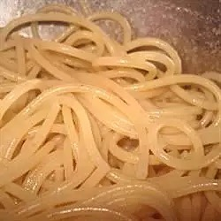

Pasta

Ingredients
- 8 ounces dry pasta
- 3 tablespoons olive oil
Directions
- Bring a large pot of lightly salted water to a boil. Add pasta and cook for 5 to 7 minutes or until still slightly less than al dente; drain. Rinse with cold water. Toss with olive oil. Cover and refrigerate until ready to use. To reheat, bring a large pot of water to a boil, add pasta and cook until hot, 1 to 2 minutes.